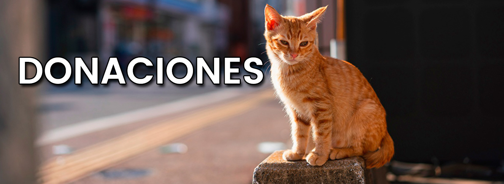
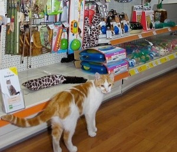
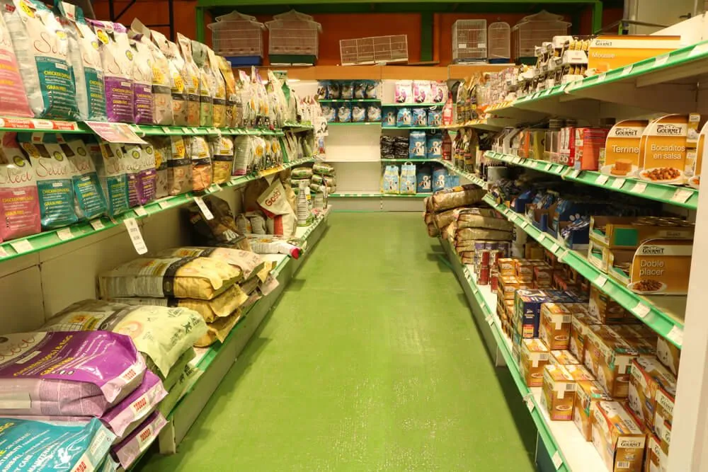

Historia
¿Por que fundamos esta tienda?
Fundé esta tienda allá por el 2008 por que desde niño he sido amante de los animales, especialmente de los gatos, por esos
tiempos, mi gato llamado Bruce falleció, debido a una intoxicación, la cual no pude evitar, quise hacer algo pero
ya era demasiado tarde, solo desperté y lo encontré tirado, fallecido, con el dolor de mi corazón lo enterré en un cementerio
de animales cerca de mi ciudad, y lo visito cada año recordandolo, mi mascota estuvo durante casi toda mi adolescencia
y por eso su nombre esta en mi tienda, "Bruce Shop", en memoria a el.
Hitos durante nuestra Historia
2018: Tuvimos nuestra primera feria de donaciones, miles de personas ese día vinieron a donar distintos
productos, como juguetes y demás, que despues nosotros mandamos a distintas organizaciones del país

Fotos historicas

La primera foto que tomamos dentro de la tienda
